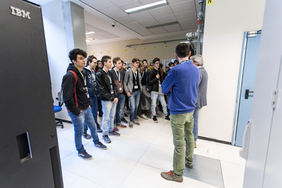

Il 28 marzo la nostra classe si è recata a Parma ad Intesa Sanpaolo. Dopo essere stati accolti gentilmente dal personale della banca, siamo stati spostati in una sala conferenze dove ci hanno spiegato la storia di Intesa Sanpaolo. Il Gruppo Intesa Sanpaolo, che nasce dalla fusione di Sanpaolo IMI in Banca Intesa, è il maggior gruppo bancario in Italia con 11,1 mln di clienti ed uno dei principali in Europa. Con una copertura strategica
del territorio si colloca tra i principali gruppi bancari nei mercati del Centro-Est Europa e nel Medio Oriente e Nord Africa.
L’argomento di cui abbiamo parlato per la maggior parte del tempo è stata la stampante 3D.
L'attività si articola in business units. Senza tecnologia Intesa Sanpaolo probabilmente non esisterebbe, infatti la loro sede può fare affidamento su più di 400000 dispositivi tecnologici(computer,ATM..ecc).Dopo averci spiegato la storia e le modalità di funzionamento della banca ci hanno portato a visitare l’immensa struttura, abbiamo visto la sala della gestione dei dati: un'immensa stanza in cui ogni secondo vengono raccolti milioni di dati.
Al piano sottostante invece erano presenti delle persone che controllavano che tutto funzionasse nel modo corretto.